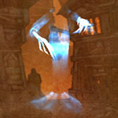
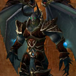

You can find the Stratholme Main Gate dungeon entrance within Eastern Plaguelands, Eastern Kingdoms.
The coordinates are (27.0,11.6)

Route:
Map 1

Bosses:
1. The Unforgiven2. Hearthsinger Forresten3. Timmy the Cruel4. Commander Malor5. Willey Hopebreaker6. Instructor Galford7. Balnazzar

Quick Boss Tactics:/i Interrupt Unrelenting Anguish. The 4 adds (Vengeful Phantoms) inflict frost damage.
Quick Boss Tactics:
/i Interrupt Enchanting Lullaby. Shoots random players inflicting physical damage. Demoralizing Shout reduces players melee attack.
/i Interrupt Enchanting Lullaby. Shoots random players inflicting physical damage. Demoralizing Shout reduces players melee attack.
Quick Boss Tactics:
/i Deals physical damage. Ravenous Claw hits current target & heals boss. At 50% health enrages increasing damage & speed.
/i Deals physical damage. Ravenous Claw hits current target & heals boss. At 50% health enrages increasing damage & speed.
Quick Boss Tactics:
/i Interrupt Shadow Bolt Volley. Inflicts physical damage. Head Crack reduces a players stamina.
/i Interrupt Shadow Bolt Volley. Inflicts physical damage. Head Crack reduces a players stamina.
Quick Boss Tactics:
/i Summons rifleman adds, keep on top of them (summons more). Dps pick up Cannonball Stacks to fire the Cannons at the adds. Inflicts physical damage to players.
/i Summons rifleman adds, keep on top of them (summons more). Dps pick up Cannonball Stacks to fire the Cannons at the adds. Inflicts physical damage to players.
Quick Boss Tactics:
/i Fire Nova inflicts fire damage to all nearby players. Inflicts a fire damage dot on current target. Burning Winds inflicts fire damage to current target & stuns.
/i Fire Nova inflicts fire damage to all nearby players. Inflicts a fire damage dot on current target. Burning Winds inflicts fire damage to current target & stuns.

Quick Boss Tactics:/i Inflicts shadow damage to players. Domination controls a random player for 8 sec. Puts a random player to sleep, stuns for 6 sec. Psychic Scream causes all nearby players to flee.